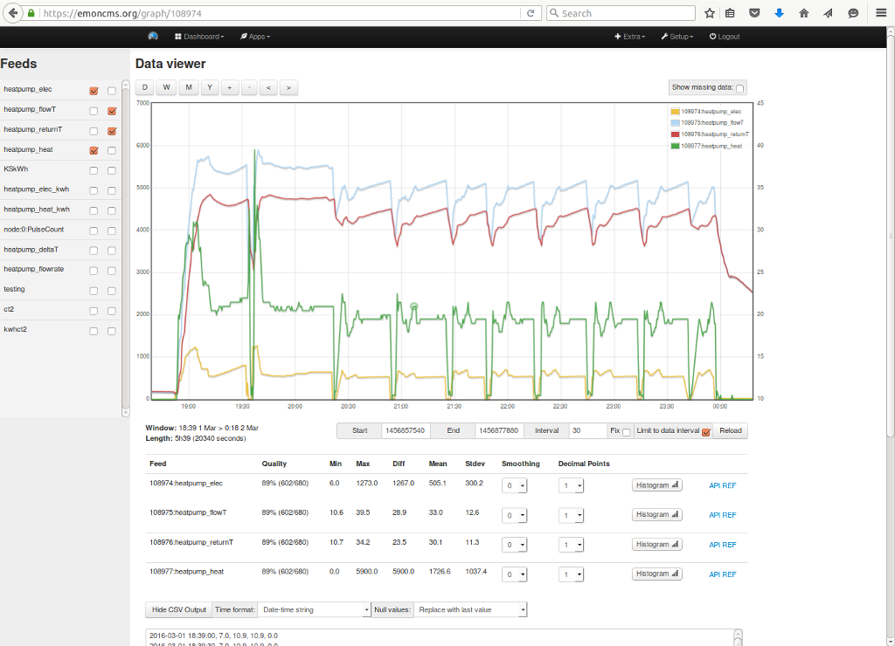
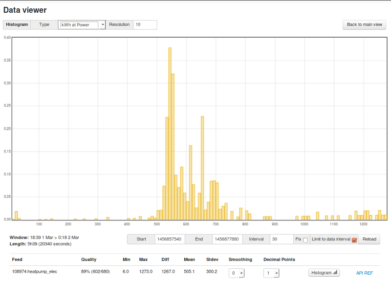
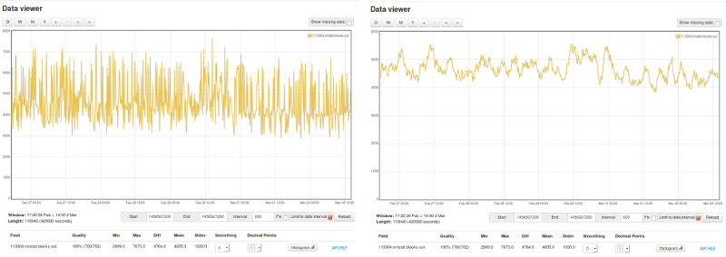
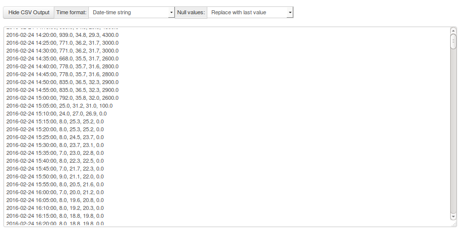

This is a new multigraph data viewer for emoncms, on emoncms.org for testing now and github https://github.com/emoncms/graph
Preamble
Last December I built a minimal data viewer for emoncms data called phpfinaview here. It featured amongst other things a multigraph data viewer with one click add remove feed left/right axis control and a list of the stats of each feed below the graph view. I used it a lot to explore data from my heatpump, the combination of the easy feed addition/removal and the stats at the bottom meant I could get at COP figures at mean outside temperatures and flow temperatures much faster. I also added a feature to create a histogram of the data in the view to see at which power levels the heatpump used more energy over time without needing to create histogram feeds which are not supported on the low write mode of emoncms anyway.
In order to make it possible to have this functionality from within emoncms I have put this together as a new module called graph which can replace the default feed data viewer in emoncms. So that when you click on the view/eye icon on a feed it goes straight into this multigraph style environment. This is up and running now on emoncms.org to test and the module is available on github here https://github.com/emoncms/graph
Here are a few screenshots of what it can do:
Main view:
The feed selection pane on the left is responsive and disappears when the screen size is less than 1024px wide.

Histogram
View any feed as a histogram of the amount of time spent at the range of values in the view or in the case of power feeds the amount of kWh consumed at a given power level. The resolution of the histogram can be selected in the view.

Smoothing
Useful where data is noisy and its hard to make out a pattern, this is a moving average the number of points to average can be selected on a per feed basis:

Export view as CSV
Choose the time format: unix timestamp, seconds since start or date time string
Choose what to do if missing values are present: show, remove, use last valid value

Further development
- Ability to save and load saved graph's (uses same json structure as multigraphs)
- Import graph built using graph into dashboards
- Tooltips
- Datapoint editor
- Selectable line or bar graph form on a per feed basis
- Selectable line color and fill.
- Realtime data view
Im thinking that saved graphs produced with this module could ultimately replace vis module visualisations: realtime, rawdata, bargraph, graph, multigraph. In-built data editing could replace edit daily and edit realtime. The histogram calculation on the fly can replace the need for the histogram input processor, feed engine and visualisations and on the fly averaging could replace the need for the PHPFiwa feed engine.
I imagine there will be some bugs in this for a bit so please let me know if you see anything that's not quite right or ideas for improvement.
Re: New emoncms data viewer: Graph
Data quality indicator
The module also calculates an indication of the data quality present for each feed by dividing the expected number of data points made in the request by the number of valid data points present. This is there to help notify of radio or internet connection issues early and feeds in the discussion here about radio reliability testing https://openenergymonitor.org/emon/node/11390
Fixable data interval
This can be quite a useful option to use alongside the csv export if you wish to select a view and keep the data interval at say 30s, set the interval to 30 and then tick fix to lock. There is a request limit of 3000 datapoints, (8000 on emoncms v9 running locally)
Re: New emoncms data viewer: Graph
That's really great Trystan!!! I will definately check this out.
Does it need something special like Redis etc. or can I still use it on my windows machine running it?
Re: New emoncms data viewer: Graph
Thanks! no special requirements, its all client side browser based. To launch it without changing the feed module on a self hosted install the URL is
emoncms/graph
or to launch from the feed view change this line:
https://github.com/emoncms/emoncms/blob/master/Modules/feed/Views/feedli...
'view-action':{'title':'', 'type':"iconlink", 'link':path+"vis/auto?feedid="},to
'view-action':{'title':'', 'type':"iconlink", 'link':path+"graph/"},Re: New emoncms data viewer: Graph
Cool stuff. it's working :-)
Re: New emoncms data viewer: Graph
Very nice addition thanks :)